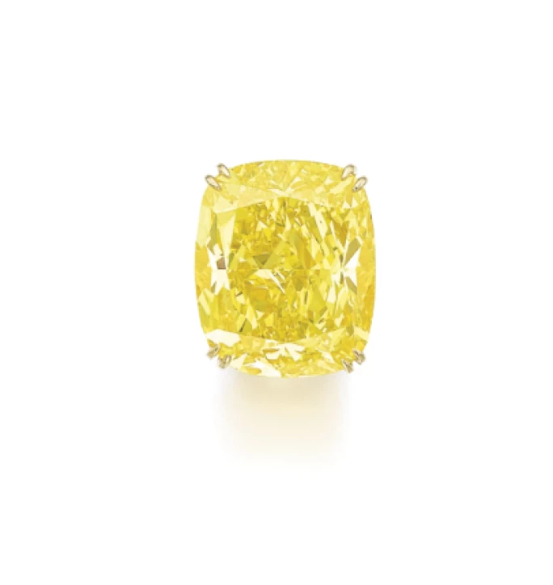
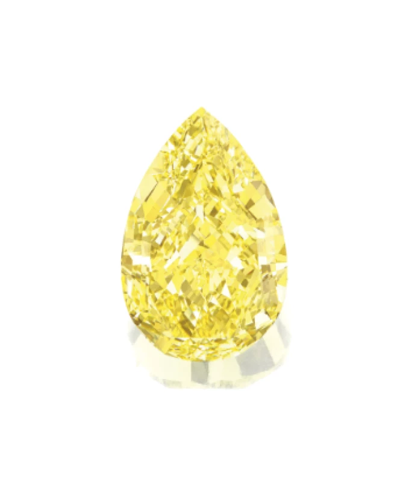
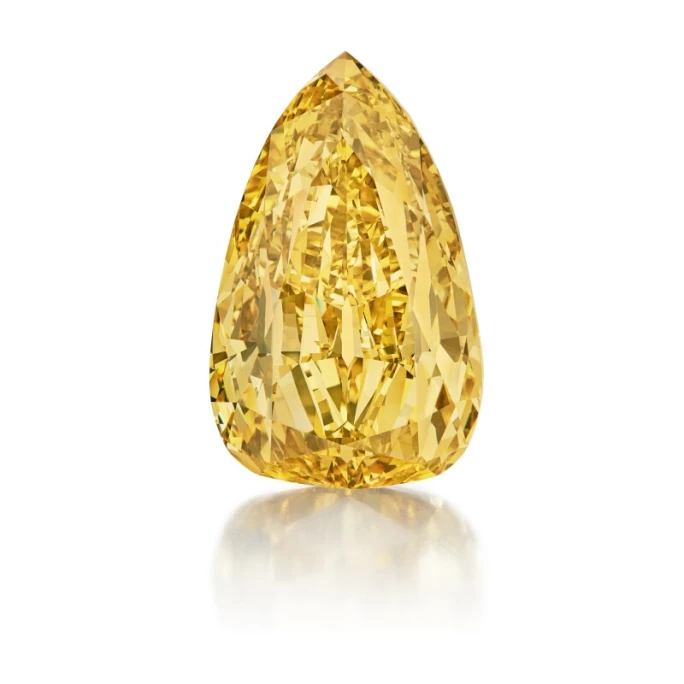
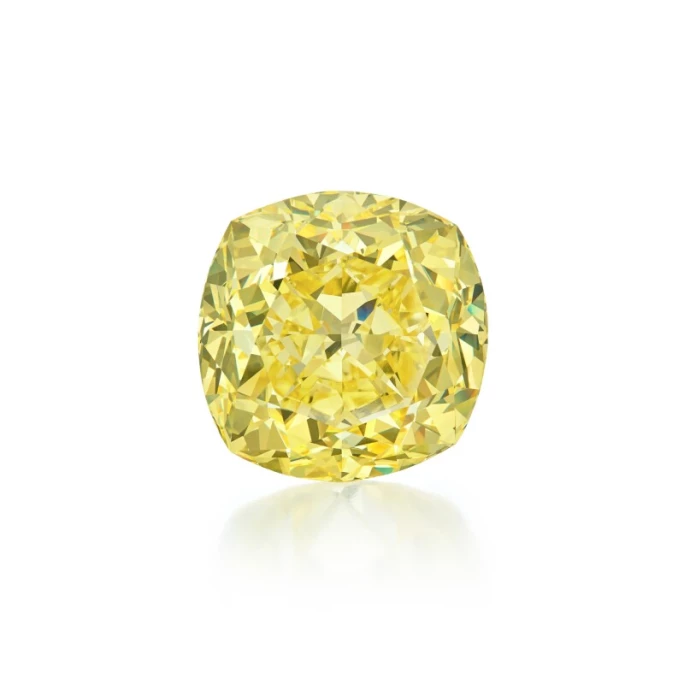

譯自 Lydia Dokko · Sotheby's
探索打破拍賣紀錄的黃鑽珍品。
黃鑽簡史
黃鑽那璀璨奪目的金黃光芒，自古以來便令藏家與珠寶愛好者為之傾心嚮往。1866 年，南非發現首枚經正式記載的黃鑽，即舉世聞名的尤里卡鑽石（Eureka Diamond）。這枚開創歷史的寶石現藏於南非金伯利礦業博物館，見證著南非鑽石開採的輝煌源起。
黃鑽的獨特色澤源於晶體結構中的氮原子，這些原子吸收藍光後呈現出標誌性的金黃光芒。美國寶石研究院（GIA）將黃鑽依色彩濃度分級，從「淡彩」至「濃彩」不等，色澤愈深邃鮮豔者，越發珍稀。作為成長、重生與純淨的象徵，黃鑽為眾多歷史上的尊貴珠寶增光添彩。其中最負盛名的莫過於重達 129.54 克拉的「蒂芙尼黃鑽」，這件曠世之作僅為少數名人配戴，包括奧黛麗·赫本（Audrey Hepburn）（1961 年）、Lady Gaga（2019 年奧斯卡典禮）以及蒂芙尼廣告中的碧昂絲（Beyoncé）（2021 年）。
百克拉黃鑽
縱觀拍賣史，百克拉以上的黃鑽每現身國際拍場，必掀起轟動，引得全球藏家競相爭逐。其中蘇富比更是見證並成就了諸多稀世黃鑽的傳奇身價。現今讓我們一窺四枚最觸動市場的逾百克拉黃鑽傑作：

「The Graff Vivid Yellow」鑽石
1. The Graff Vivid Yellow｜1,680 萬美元
這枚極其罕見的艷彩黃鑽戒指，以「The Graff Vivid Yellow」之名威震全球，在 2014 年以 1,680 萬美元（約 1,450 萬瑞士法郎）寫下拍賣傳奇。這枚重達 100.09 克拉的枕形改良明亮式切割艷彩黃鑽，堪稱當今最負盛名的鑽石之一。戒臺兩肩以明亮式切割鑽石點綴，搭配品牌刻名的可拆卸戒環，盡展匠心。這枚瑰寶更獲收錄於伊恩·鮑爾福（Ian Balfour）2008 年的權威著作《著名鑽石》（Famous Diamonds），印證其在稀世逾百克拉黃鑽中的超然地位。

「落日」艷彩黃色鑽石，110.03 克拉
2. The Sun Drop Diamond｜1,300 萬美元
重達 110.03 克拉的「落日」是全球最大的梨形艷彩黃鑽。2011 年，這枚舉世無雙的珍品在日內瓦蘇富比以 1,300 萬美元（即 1,120 萬瑞士法郎）易主。在驚艷拍場之前，這枚瑰寶曾於倫敦自然歷史博物館展出，奪目光彩令觀者屏息。據館中礦物部典藏主管艾倫·哈特（Alan Hart）考證，「落日」孕育於地殼深處，歷經 10 至 30 億年歲月，期間吸納氮元素，方鑄就成此般非凡色澤。自 2010 年南非開採後，歷經半年匠心琢磨，終成今日梨形黃鑽之最，後獲賜名「Lady Dalal」，為其傳奇增添新章。

「金絲雀」鑽石，深彩褐黃色鑽石，303.10 克拉，內部無瑕
3. 「金絲雀」鑽石 ｜1,230 萬美元
這枚重達 303.10 克拉的「金絲雀」梨形深彩褐黃鑽，於 2022 年 12 月以 1,230 萬美元成交，震撼市場。GIA 鑑定報告不僅確認其深彩褐黃色調，更證實其內部無瑕。報告中特別附有專題文章，細述此等重量的內部無瑕鑽石在寶石界可謂稀世珍品，舉世難尋。這枚瑰寶的現世本身就是一段佳話：1980 年代初，剛果民主共和國姆布吉馬伊一位年輕女孩在叔叔家附近玩耍時，意外發現這枚原石，消息一出，頓時轟動全球。除其驚人體積外，其獨特的內部特徵更令專家嘆為觀止。權威著作《著名鑽石》作者伊恩·鮑爾福筆下描繪：「這枚晶體呈現出層層分明的色彩變化，每層色調都訴說著其成長過程中的環境變遷。最初無色透明，繼而漸染淺黃，最終披上一層琥珀煙燻色澤的華美外衣。」時至今日，這枚重達 303.10 克拉的「金絲雀」鑽石依然是世上最大的內部無瑕鑽石，獨步寶石界。

非凡未經鑲嵌艷彩色鑽石
4. 未經鑲嵌艷彩黃色鑽石｜550 萬美元
2023 年 12 月，蘇富比以 550 萬美元成交的這枚未經鑲嵌艷彩黃鑽，以純粹之美驚艷世人。此鑽經枕形改良明亮式切割，在 GIA 色彩分級中獲評「艷彩黃色」，為黃鑽所能呈現的最深邃濃郁色澤。這般色階的黃鑽向來備受推崇，總能創下卓越身價。加之其 VS2 的淨度，僅現極微內含，更襯托出這枚 133.03 克拉枕形切割黃鑽在奢華珠寶市場中的獨特價值。
黃鑽自古以來以其華光流溢、稀世難尋、深厚寓意，令人傾慕。從開創先河的尤里卡鑽石到令人屏息的逾百克拉瑰寶，每枚黃鑽都牽動著全球藏家與鑑賞家的心弦。它們溫潤的金黃光芒不僅展現出大自然的鬼斧神工，更完美融合永恆奢華與匠心技藝。時至今日，這些稀世珍品依然在全球最尊貴的珠寶殿堂中綻放光彩；超凡絕代的價值與魅力，將永駐珠寶史冊。